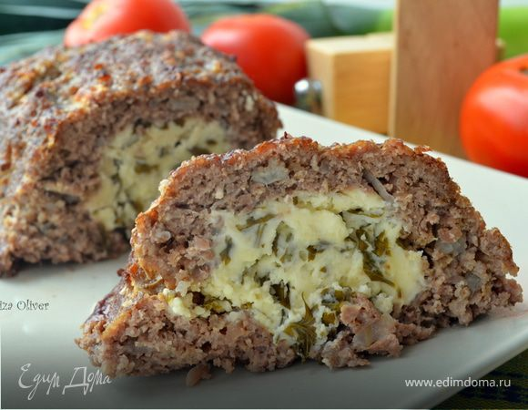
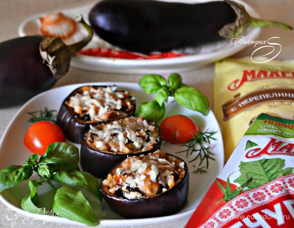
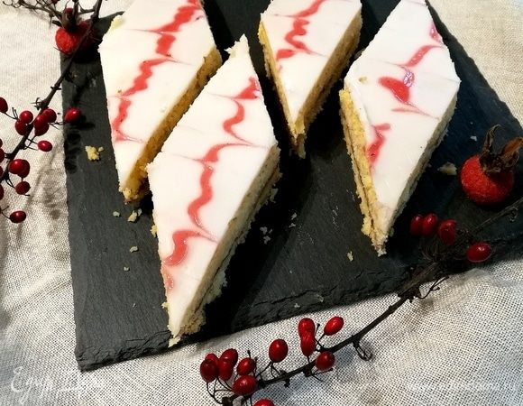

| Название блюда | Оценка (1-10) | Ссылка на рецепт | Фото |
|---|---|---|---|
| Особенный мясной рулет с фетой, травами и чесноком | 9 | Рецепт |  |
| Закуска из баклажанов с мидиями | 8 | Рецепт |  |
| Александровский пирог | 7 | Рецепт |  |
| Чипсы из поленты с розмарином и пряной солью | 10 | Рецепт | |
| Эклеры «Новогодние» | 5 | Рецепт | |